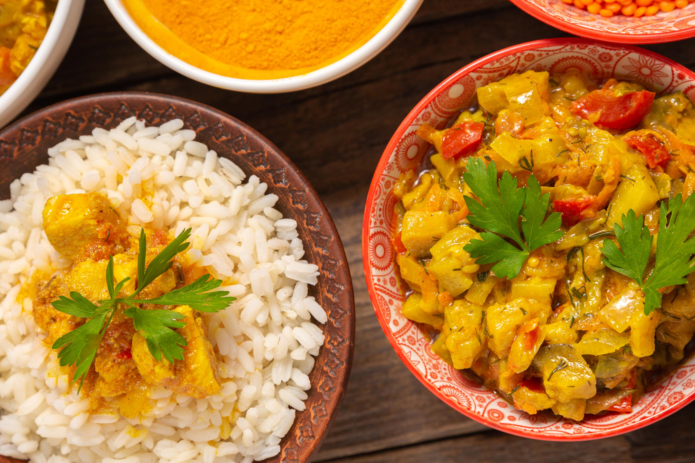
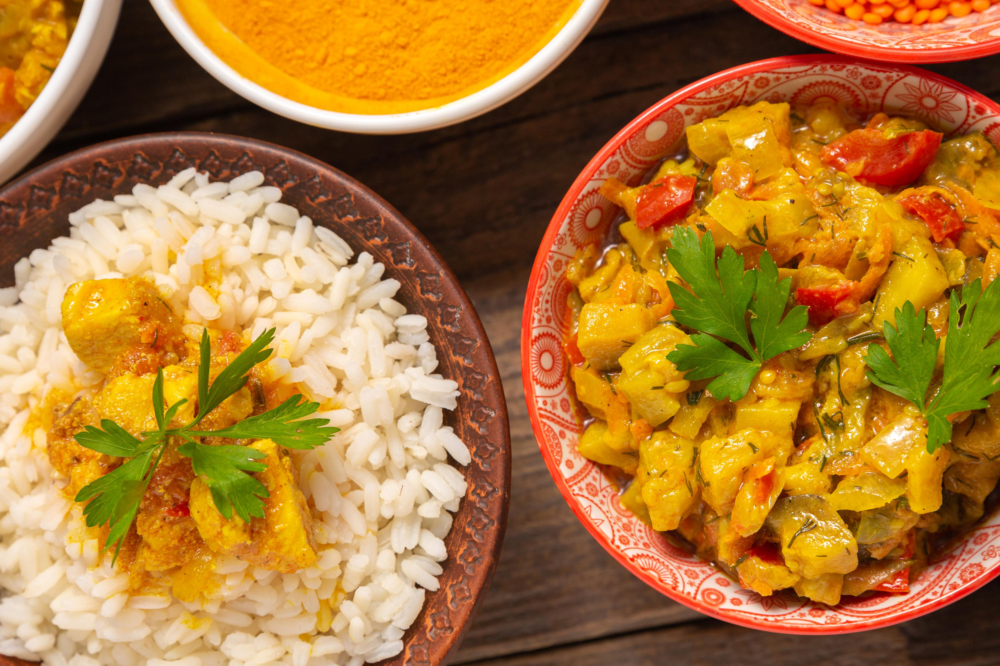

Delice Africain
Découvrez un festin de saveurs authentiques - une symphonie de délices africains, chaque plat une histoire à savourer chez Delice Africain.
Niché au cœur du quartier sénégalais Delice Africain vous ouvre ses portes dans une ambiance chaleureuse et conviviale.
Chez Delice Africain, nous vous invitons à découvrir une cuisine authentique et généreuse, inspirée des saveurs envoûtantes de l'Afrique. Nos plats sont préparés avec des ingrédients frais et de qualité, provenant directement des marchés locaux.
Dans un décor qui évoque l'essence même de l'Afrique, entre boiseries exotiques et motifs colorés, laissez-vous emporter par une expérience culinaire unique, où chaque bouchée raconte une histoire de tradition et de passion.
Accompagnez votre repas avec notre sélection de vins raffinés, choisis avec soin pour compléter parfaitement chaque plat et sublimer votre expérience gustative.
Delice Africain, où les saveurs authentiques rencontrent l'hospitalité sénégalaise pour créer des souvenirs inoubliables. Venez nous rejoindre et laissez-vous envoûter par la magie de l'Afrique.


 
